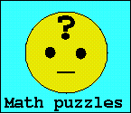

| MathOnLine |
Counting visitors
 |
Mathematical humorcollected by Andrej and Elena Cherkaev|| Andrej's homepage || Elena's homepage || |
We are concerned that publication of sacral lecture jokes may endanger the respect to math. teachers in freshmen classes. Our excuse for this risky ethnographic research is that the majority of the jokes already exists on the Internet.
Sometimes, people tend to attribute the jokes either to their beloved teachers (Peter Lax is so far the champion) or to legendary figures as Norbert Wiener or Paul Erdos; similarly, physical jokes are attributed to Albert Einstein or Niels Bohr and geometrical theorems - to Euclid. A number of collected jokes we learned from our professors in Saint-Petersburg. Generally, attributing the jokes is hopeless. Indeed, the phrasing of the narrator is as important as the essence of the humor (if this essence does exist at all). To our mind, a joke goes to "public domain" immediately after being created or modified and there should be no authorship in it. Most of the collected sayings and jokes are repeated in a number of webpages, which makes it difficult to credit a particular Internet source. Instead, we thank all Internet collectors of math. jokes.
Please email us your comments and new stories: cherk@math.utah.edu. Enjoy!
| 1. Definitions
2. A mathematician and .. 3. Math education 4. Seminar semantics, etc. 5. Theorems |
6. Playground
7. Puns 8. Anecdotes 9. Limericks 10. Links |
Mathematics is made of 50 percent formulas, 50 percent proofs, and 50 percent imagination.
"A mathematician is a device for turning coffee into theorems" (P. Erdos)
Addendum: American coffee is good for lemmas.
An engineer thinks that his equations are an approximation to reality. A physicist thinks reality is an approximation to his equations. A mathematician doesn't care.
Old mathematicians never die; they just lose some of their functions.
Mathematicians are like Frenchmen: whatever you say to them, they translate it into their own language, and forthwith it means something entirely different. -- Goethe
Mathematics is the art of giving the same name to different things. -- J. H. Poincare
What is a rigorous definition of rigor?
There is no logical foundation of mathematics, and Gödel has proved it!
I do not think -- therefore I am not.
Here is the illustration of this principle:
One evening Rene Descartes went to relax at a local tavern. The tender
approached and said, "Ah, good evening Monsieur Descartes! Shall I serve
you the usual drink?". Descartes replied, "I think not.", and promptly
vanished.
A topologist is a person who doesn't know the difference between a coffee cup and a doughnut.
A mathematician is a blind man in a dark room looking for a black cat which isn't there. (Charles R Darwin)
A statistician is someone who is good with numbers but lacks the personality to be an accountant.
Classification of mathematical problems as linear and nonlinear is like classification of the Universe as bananas and non-bananas.
A law of conservation of difficulties: there is no easy way to prove a deep result.
A tragedy of mathematics is a beautiful conjecture ruined by an ugly fact.
Algebraic symbols are used when you do not know what you are talking about.
Philosophy is a game with objectives and no rules.
Mathematics is a game with rules and no objectives.
Math is like love; a simple idea, but it can get complicated.
The actual quote from the Webster dictionary:
trillion n
syn SCAD, gob(s), heap, jillion, load(s), million, oodles, quantities,
thousand, wad(s)
Mathematics is like checkers in being suitable for the young, not too difficult, amusing, and without peril to the state. (Plato)
The difference between an introvert and extrovert mathematicians is: An introvert mathematician looks at his shoes while talking to you. An extrovert mathematician looks at your shoes.
A bit of theology.
Math is the language God used to write the universe.
Asked if he believes in one God, a mathematician answered:
" Yes, up to isomorphism."
God is real, unless proclaimed integer.
Medicine makes people ill, mathematics make them sad and theology makes them sinful. (Martin Luther)
The good Christian should beware of mathematicians and all those who make empty prophecies. The danger already exists that mathematicians have made a covenant with the devil to darken the spirit and confine man in the bonds of Hell. (St. Augustine)
He who can properly define and divide is to be considered a god. (Plato)
"God geometrizes" says Plato.
and here is the analytical continuation of this saying:
Physicists defer only to mathematicians, mathematicians defer only to God.
2. A mathematician and ...
The following sketches show our dedication
to abstract thinking in the most unusual situations and strong belief
in the universality of mathematical methods. Mathematicians are always
impatient and intelligent.
A mathematician and a Wall street broker went to races. The broker suggested
to bet $10,000 on a horse. The mathematician was sceptical, saying that
he wanted first to understand the rules, to look on horses, etc. The broker
whispered that he knew a secret algorithm for the success, but he could
not convince the mathematician.
"You are too theoretical," he said and bet on a horse. Surely, that
horse came first bringing him a lot of money. Triumphantly, he exclaimed:
"I told you, I knew the secret!"
"What is your secret?" the mathematician asked.
"It is rather easy. I have two kids, three and five year old. I sum
up their ages and I bet on number nine."
"But, three and five is eight," the mathematician protested.
"I told you, you are too theoretical!" the broker replied, "Haven't
I just shown experimentally, that my calculation is correct! 3+5=9!"
A mathematician, a physicist, an engineer went again to the races and laid their money down. Commiserating in the bar after the race, the engineer says, "I don't understand why I lost all my money. I measured all the horses and calculated their strength and mechanical advantage and figured out how fast they could run..."
The physicist interrupted him: "...but you didn't take individual variations into account. I did a statistical analysis of their previous performances and bet on the horses with the highest probability of winning..."
"...so if you're so hot why are you broke?" asked the engineer. But before the argument can grow, the mathematician takes out his pipe and they get a glimpse of his well-fattened wallet. Obviously here was a man who knows something about horses. They both demanded to know his secret.
"Well," he says, "first I assumed all the horses were identical and spherical..."
An engineer, a physicist and a mathematician are staying in a hotel.
The engineer wakes up and smells smoke. He goes out into the hallway
and sees a fire, so he fills a trash can from his room with water and douses
the fire. He goes back to bed.
Later, the physicist wakes up and smells smoke. He opens his door and
sees a fire in the hallway. He walks down the hall to a fire hose and after
calculating the flame velocity, distance, water pressure, trajectory, etc.
extinguishes the fire with the minimum amount of water and energy needed.
Later, the mathematician wakes up and smells smoke. He goes to the
hall, sees the fire and then the fire hose. He thinks for a moment and
then exclaims, "Ah, a solution exists!" and then goes back to bed.
A physicist and a mathematician are sitting in a faculty lounge. Suddenly, the coffee machine catches on fire. The physicist grabs a bucket and leap towards the sink, filled the bucket with water and puts out the fire. Second day, the same two sit in the same lounge. Again, the coffee machine catches on fire. This time, the mathematician stands up, got a bucket, hands the bucket to the physicist, thus reducing the problem to a previously solved one.
A biologist, a physicist and a mathematician were sitting in a street
cafe watching the crowd. Across the street they saw a man and a woman entering
a building. Ten minutes they reappeared together with a third person.
- They have multiplied, said the biologist.
- Oh no, an error in measurement, the physicist sighed.
- If exactly one person enters the building now, it will be empty again,
the mathematician concluded.
Several scientists were all posed the following question: "What is 2
* 2 ?"
The engineer whips out his slide rule (so it's old) and shuffles it
back and forth, and finally announces "3.99".
The physicist consults his technical references, sets up the problem
on his computer, and announces "it lies between 3.98 and 4.02".
The mathematician cogitates for a while, then announces: "I don't know
what the answer is, but I can tell you, an answer exists!".
Philosopher smiles: "But what do you mean by 2 * 2 ?"
Logician replies: "Please define 2 * 2 more precisely."
The sociologist: "I don't know, but is was nice talking about it".
Behavioral Ecologist: "A polygamous mating system".
Medical Student : "4"
All others looking astonished : "How did you know ??"
Medical Student : :I memorized it."
A physicist, a mathematician, and a mystic were asked to name
the greatest invention of all time. The physicist chose the fire,
which gave humanity the power over matter.
The mathematician chose the alphabet, which
gave humanity power over symbols. The mystic chose the thermos bottle.
"Why a thermos bottle?" the others asked.
"Because the thermos keeps hot liquids hot in winter and cold liquids cold
in summer."
"Yes -- so what?"
"Think about it." said the mystic reverently. That little bottle -- how
does it *know*?"
An chemist, a physicist, and a mathematician are stranded on an island when a can of food rolls ashore. The chemist and the physicist comes up with many ingenious ways to open the can. Then suddenly the mathematician gets a bright idea: "Assume we have a can opener ..."
A mathematician is asked to design a table. He first designs a table with no legs. Then he designs a table with infinitely many legs. He spend the rest of his life generalizing the results for the table with N legs (where N is not necessarily a natural number).
Several scientists were all posed the following question: "What is pi
?"
The engineer said: "It is approximately 3 and 1/7"
The physicist said: "It is 3.14159"
The mathematician thought a bit, and replied "It is equal to pi".
(A nutritionist: "Pie is a healthy and delicious dessert!" )
An engineer, a physicist and a mathematician were asked to hammer a
nail into a wall.
The engineer went to build a Universal Automatic Nailer -- a device
able to hammer every possible nail into every possible wall.
The physicist conducted series of experiments on strength of hammers,
nails, and walls and developed a revolutionary technology of ultra-sonic
nail hammering at super-low temperature.
The mathematician generalized the problem to a N dimensional problem
of penetration of a knotted one dimensional nail into a N-1 dimensional
hyper-wall. Several fundamental theorems are proved. Of course, the problem
is too rich to suggest a possibility of a simple solution, even the existence
of a solution is far from obvious.
A mathematician, a physicist, and an engineer were traveling through
Scotland when they saw a black sheep through the window of the train.
"Aha," says the engineer, "I see that Scottish sheep are black."
"Hmm," says the physicist, "You mean that some Scottish sheep are black."
"No," says the mathematician, "All we know is that there is at least
one sheep in Scotland, and that at least one side of that one sheep is
black!"
A mathematician, scientist, and engineer are each asked: "Suppose we define a horse's tail to be a leg. How many legs does a horse have?" The mathematician answers "5"; the scientist "1"; and the engineer says "But you can't do that!
A mathematician, a physicist, and an engineer are all given identical rubber balls and told to find the volume. They are given anything they want to measure it, and have all the time they need. The mathematician pulls out a measuring tape and records the circumference. He then divides by two times pi to get the radius, cubes that, multiplies by pi again, and then multiplies by four-thirds and thereby calculates the volume. The physicist gets a bucket of water, places 1.00000 gallons of water in the bucket, drops in the ball, and measures the displacement to six significant figures. And the engineer? He writes down the serial number of the ball, and looks it up.
A Mathematician (M) and an Engineer (E) attend a lecture by a Physicist.
The topic concerns Kulza-Klein theories involving physical processes that
occur in spaces with dimensions of 9, 12 and even higher. The M is sitting,
clearly enjoying the lecture, while the E is frowning and looking generally
confused and puzzled. By the end the E has a terrible headache. At the
end, the M comments about the wonderful lecture.
E: "How do you understand this stuff?"
M: "I just visualize the process"
E: "How can you POSSIBLY visualize something that occurs in 9-dimensional
space?"
M: "Easy, first visualize it in N-dimensional space, then let N go
to 9"
A team of engineers were required to measure the height of a flag pole. They only had a measuring tape, and were getting quite frustrated trying to keep the tape along the pole. It kept falling down, etc. A mathematician comes along, finds out their problem, and proceeds to remove the pole from the ground and measure it easily. When he leaves, one engineer says to the other: "Just like a mathematician! We need to know the height, and he gives us the length!"
A mathematician and a physicist agree to a psychological experiment.
The (hungry) mathematician is put in a chair in a large empty room and
his favorite meal, perfectly prepared, is placed at the other end of the
room. The psychologist explains, "You are to remain in your chair. Every
minute, I will move your chair to a position halfway between its current
location and the meal." The mathematician looks at the psychologist in
disgust. "What? I'm not going to go through this. You know I'll never reach
the food!" And he gets up and storms out.
The psychologist ushers the physicist in. He explains the situation,
and the physicist's eyes light up and he starts drooling. The psychologist
is a bit confused. "Don't you realize that you'll never reach the food?"
T he physicist smiles and replies: "Of course! But I'll get close enough
for all practical purposes!"
One day a farmer called up an engineer, a physicist, and a mathematician
and asked them to fence of the largest possible area with the least amount
of fence.
The engineer made the fence in a circle and proclaimed that he had
the most efficient design.
The physicist made a long, straight line and proclaimed "We can assume
the length is infinite..." and pointed out that fencing off half of the
Earth was certainly a more efficient way to do it.
The Mathematician just laughed at them. He built a tiny fence around
himself and said "I declare myself to be on the outside."
The physicist and the engineer are in a hot-air balloon. Soon, they
find themselves lost in a canyon somewhere. They yell out for help: "Helllloooooo!
Where are we?"
15 minutes later, they hear an echoing voice: "Helllloooooo! You're
in a hot-air balloon!!"
The physicist says, "That must have been a mathematician."
The engineer asks, "Why do you say that?"
The physicist replied: "The answer was absolutely correct, and it was
utterly useless."
Several scientists were asked to prove that all odd integers higher than 2 are prime.
Mathematician: 3 is a prime, 5 is a prime, 7 is a prime, and by
induction - every odd integer higher than 2 is a prime.
Physicist: 3 is a prime, 5 is a prime, 7 is a prime, 9 is an experimental
error, 11 is a prime. Just to be sure, try several randomly chosen numbers:
17 is a prime, 23 is a prime...
Engineer: 3 is a prime, 5 is a prime, 7 is a prime, 9 is an approximation
to a prime, 11 is a prime,...
Programmer (reading the output on the screen): 3 is a prime, 3 is a
prime, 3 a is prime, 3 is a prime....
Biologist: 3 is a prime, 5 is a prime, 7 is a prime, 9 -- results have
not arrived yet,...
Psychologist: 3 is a prime, 5 is a prime, 7 is a prime, 9 is a prime
but tries to suppress it,...
Chemist (or Dan Quayle): What's a prime?
Politician: "Some numbers are prime.. but the goal is to create a kinder,
gentler society where all numbers are prime... "
Programmer: "Wait a minute, I think I have an algorithm from Knuth
on finding prime numbers... just a little bit longer, I've found the last
bug... no, that's not it... ya know, I think there may be a compiler bug
here - oh, did you want IEEE-998.0334 rounding or not? - was that in the
spec? - hold on, I've almost got it - I was up all night working on this
program, ya know... now if management would just get me that new workstation
that just came out, I'd be done by now... etc., etc. ..."
(Two is the oddest prime of all, because it's the only one that's even!)
Dean, to the physics department. "Why do I always have to give you guys so much money, for laboratories and expensive equipment and stuff. Why couldn't you be like the math. department - all they need is money for pencils, paper and waste-paper baskets. Or even better, like the philosophy department. All they need are pencils and paper."
A mathematician, an engineer, and a chemist were walking down the road when they saw a pile of cans of beer. Unfortunately, they were the old-fashioned cans that do not have the tab at the top. One of them proposed that they split up and find can openers. The chemist went to his lab and concocted a magical chemical that dissolves the can top in an instant and evaporates the next instant so that the beer inside is not affected. The engineer went to his workshop and created a new HyperOpener that can open 25 cans per second.
They went back to the pile with their inventions and found the mathematician finishing the last can of beer. "How did you manage that?" they asked in astonishment. The mathematician answered, "Oh, well, I assumed they were open and went from there."
An engineer, a physicist and a mathematician find themselves in an anecdote, indeed an anecdote quite similar to many that you have no doubt already heard. After some observations and rough calculations the engineer realizes the situation and starts laughing. A few minutes later the physicist understands too and chuckles to himself happily as he now has enough experimental evidence to publish a paper.
This leaves the mathematician somewhat perplexed, as he had observed right away that he was the subject of an anecdote, and deduced quite rapidly the presence of humor from similar anecdotes, but considers this anecdote to be too trivial a corollary to be significant, let alone funny.
New York (CNN). At John F. Kennedy International Airport today, a high school mathematics teacher was arrested trying to board a flight while in possession of a compass, a protractor and a graphical calculator. According to law enforcement officials, he is believed to have ties to the Al-Gebra network. He will be charged with carrying weapons of math instruction. It was later discovered that he taught the students to solve their problem with the help of radicals!
A mathematician organizes a lottery in which the prize is an infinite amount of money. When the winning ticket is drawn, and the jubilant winner comes to claim his prize, the mathematician explains the mode of payment: "1 dollar now, 1/2 dollar next week, 1/3 dollar the week after that..."
A Mathematician was put in a room. The room contains a table and three metal spheres about the size of a softball. He was told to do whatever he wants with the balls and the table in one hour. After an hour, the balls are arranges in a triangle at the center of the table. The same test is given to a Physicist. After an hour, the balls are stacked one on top of the other in the center of the table. Finally, an Engineer was tested. After an hour, one of the balls is broken, one is missing, and he's carrying the third out in his lunchbox.
A mathematician decides he wants to learn more about practical problems. He sees a seminar with a nice title: "The Theory of Gears." So he goes. The speaker stands up and begins, "The theory of gears with a real number of teeth is well known ..."
When a statistician passes the airport security check, they discover a bomb in his bag. He explains. "Statistics shows that the probability of a bomb being on an airplane is 1/1000. However, the chance that there are two bombs at one plane is 1/1000000. So, I am much safer..."
What is the difference between a Psychotic, a Neurotic and a mathematician? A Psychotic believes that 2+2=5. A Neurotic knows that 2+2=4, but it kills him. A mathematician simply changes the base.
Q: What will a logician choose: a half of an egg or eternal bliss in the afterlife? A: A half of an egg! Because nothing is better than eternal bliss in the afterlife, and a half of an egg is better than nothing.
A physicist has been conducting experiments and has worked out a set of equations which seem to explain his data. He asks a mathematician to check them. A week later, the mathematician calls "I'm sorry, but your equations are complete nonsense." "But these equations accurately predict results of experiments. Are you sure they are completely wrong? "To be precise, they are not always a complete nonsense. But the only case in which they are true is the trivial one where the field is Archimedean..."
An engineer and a topologist were locked in the rooms for a day with a can of food but without an opener. At the end of the day, the engineer is sitting on the floor of his room and eating from the open can: He threw it against the walls until it cracked open. In the mathematician's room, the can is still closed but the mathematician has disappeared. There are strange noises coming from inside the can... When it is opened and the mathematician crawls out. "Damn! I got a sign wrong..."
A mathematician has spent ten years trying to prove the Riemann hypothesis. Finally, he decides to sell his soul to the devil in exchange for a proof. The devil promises to deliver a proof in the four weeks. Half a year later, the devil shows up again - in a rather gloomy mood. "I'm sorry", he says. "I couldn't prove the hypothesis either. But" - and his face lightens up - "I think I found a really interesting lemma..."
To mathematicians, solutions mean finding the answers. But to chemists,
solutions are things that are still all mixed up.
The Evolution of Math Teaching
(Anon: adapted from The American Mathematical Monthly, Vol. 101, No. 5, May 1994 (Reprinted by STan Kelly-Bootle in Unix Review, Oct 94)
Top ten excuses for not doing homework:
A student comes to the department with a shiny new cup, the sort of which you
get when
having won something. He explained:
I won it in the MD Math Contest. They asked what 7 + 7 is.
I said 12 and got 3rd place!
Two male mathematicians are in a bar. The first one says to the second that the average person knows very little about basic mathematics. The second one disagrees, and claims that most people can cope with a reasonable amount of math.
The first mathematician goes off to the washroom, and in his absence the second calls over the waitress. He tells her that in a few minutes, after his friend has returned, he will call her over and ask her a question. All she has to do is answer one third x cubed.
She repeats "one thir -- dex cue"?
He repeats "one third x cubed".
Her: `one thir dex cuebd'? Yes, that's right, he says. So she agrees,
and goes off mumbling to herself, "one thir dex cuebd...".
The first guy returns and the second proposes a bet to prove his
point, that most people do know something about basic math. He says he
will ask the blonde waitress an integral, and the first laughingly agrees.
The second man calls over the waitress and asks "what is the integral of
x squared?".
The waitress says "one third x cubed" and while walking away, turns
back and says over her shoulder "plus a constant!"
A mathematician, native Texan, once was asked in his class: "What is mathematics good for?" He replied: "This question makes me sick. Like when you show somebody the Grand Canyon for the first time, and he asks you `What's is good for?' What would you do? Why, you would kick the guy off the cliff".
A somewhat advanced society has figured how to package basic knowledge
in pill form.
A student, needing some learning, goes to the pharmacy and asks what
kind of knowledge pills are available. The pharmacist says "Here's a pill
for English literature." The student takes the pill and swallows it and
has new knowledge about English literature!
"What else do you have?" asks the student.
"Well, I have pills for art history, biology, and world history," replies
the pharmacist.
The student asks for these, and swallows them and has new knowledge
about those subjects.
Then the student asks, "Do you have a pill for math?"
The pharmacist says "Wait just a moment", and goes back into the storeroom
and brings back a whopper of a pill and plunks it on the counter.
"I have to take that huge pill for math?" inquires the student.
The pharmacist replied "Well, you know math always was a little hard
to swallow."
Golden rule for math teachers: You must tell the truth, and nothing but the truth, but not the whole truth.
A math professor is one who talks in someone else's sleep.
Q:What do you get when you add 2 apples to 3 apples?
A:Answer: A senior high school math problem.
Teacher: Now suppose the number of sheep is x...
Student: Yes sir, but what happens if the number of sheep is not x?
Mathematician U. was a great friend of his five-year old grandson. They discussed everything including math and U. was very proud of the boys math talents. The child went to kindergarten; In two weeks the he ask U.to help with the difficult math problem: "There are four airplanes flying, then two more airplanes join them. How many airplanes are flying now? U. was very disappointed by the simplicity of the problem. "What confuses you?" he asked. The child says: " I know, of course, that 4 + 2 =6, but I cannot figure out what the airplanes have do with this!"
A lecturer tells some students to learn the phone-book by heart.
The mathematicians are baffled: `By heart? You kidding?'
The mathematicians are baffled: `By heart? You kidding?'
The physics-students ask: `Why?'
The engineers sigh: `Do we have to?'
The chemistry-students ask: `Till next Monday?'
The accounting-students (scribbling): `Till tomorrow?'
The laws-students answer: `We already have.'
The medicine-students ask: `Should we start on the Yellow Pages?'
Quotes from math students and lecturers
"The problems for the exam will be similar to the discussed in the class. Of course, the numbers will be different. But not all of them. Pi will still be 3.14159... "
"Roses are red,
Violets are blue,
Greens' functions are boring
And so are Fourier transforms."
"Sex and drugs? They're nothing compared with a good proof!"
Yeah, I used to think it was just recreational... then I started doin' it during the week... you know, simple stuff: differentiation, kinematics. Then I got into integration by parts... I started doin' it every night: path integrals, holomorphic functions. Now I'm on diophantine equations and sinking deeper into transfinite analysis. Don't let them tell you it's just recreational.
Fortunately, I can quit any time I want.
"He was restless during the days and couldn't sleep at night - always trying to solve his problem. When he had finally done it, he wasn't happy: he calls himself a complete idiot and throws all his notes into the garbage. Then he said, he really enjoyed it."
"Do you love your math more than me?"
"Of course not, dear - I love you much more."
"Then prove it!"
"OK... Let R be the set of all lovable objects..."
A graduate student of mathematics who used to come to the University on foot every day arrives one day on a fancy new bicycle. "Where did you get the bike from?" his friends asked. "It's a `thank you' present", he explains, "from that freshman girl I've been tutoring. Yesterday she called me and told that she had passed her math final and wanted to drop by to thank me in person. She arrived at my place on her bicycle. When I had let her in, she took all her clothes off, smiled at me, and said: `You can get from me whatever you desire!'" One of his friends remarks: "You made a really smart choice when you took the bicycle." "Yeah", another friend adds, "just imagine how silly you would have looked in a girl's clothes - and they wouldn't have fit you anyway!"
4. Seminar semantics, etc.
Next passages contain little professional
secrets. They reflect the conflict between the dreams of classical clear
presentations, the complexity of modern math problems, and the survival
tactics of the authors.
A lecturer:
"Now we'll prove the theorem. In fact I'll prove it all by myself."
How to prove it. Guide for lecturers.
Proof by vigorous handwaving:
Proof by forward reference:
Proof by funding:
Proof by example:
Proof by omission:
Proof by deferral:
Proof by picture:
Proof by intimidation:
Proof by adverb:
Proof by seduction:
Proof by cumbersome notation:
Proof by exhaustion:
Proof by obfuscation:
Proof by wishful citation:
Proof by eminent authority:
Proof by personal communication:
Proof by reduction to the wrong problem:
Proof by reference to inaccessible literature:
Proof by importance:
Proof by accumulated evidence:
Proof by cosmology:
Proof by mutual reference:
Proof by metaproof:
Proof by vehement assertion:
Proof by ghost reference:
Proof by semantic shift:
Proof by appeal to intuition:
Dictionary of Definitions of Terms Commonly Used in Math. lectures.
The following is a guide to terms which are commonly used but rarely defined. In the search for proper definitions for these terms we found no authoritative, nor even recognized, source. Thus, we followed the advice of mathematicians handed down from time immortal: "Wing It."
WHAT'S OUT AND WHAT'S IN FOR MATHEMATICAL TERMS
by
Michael Stueben (November 7, 1994)
Today it is considered an egregious faux pas to speak or write in the
crude antedated terms of our grandfathers. To assist the isolated
student and the less sophisticated teacher, I have prepared the
following list of currently fashionable mathematical terms in
academia. I pass this list on to the general public as a matter of
charity and in the hope that it will lead to more refined elucidation
from young scholars.
thinking: hypothesizing.
proof by contradiction or indirect proof: reductio ad absurdum.
mistake: non sequitur.
starting place: handle.
with corresponding changes: mutatis mutandis.
counterexample: pathological exception.
consequently: ipso facto.
swallowing results: digesting proofs.
therefore: ergo.
has an easy-to-understand, but hard-to-find solution: obvious.
has two easy-to-understand, but hard-to-find solutions: trivial.
truth: tautology.
empty: vacuous.
drill problems: plug-and-chug work.
criteria: rubric.
example: substantive
instantiation.
similar structure: homomorphic.
very similar structure: isomorphic.
same area: isometric.
arithmetic: number theory.
count: enumerate.
one: unity.
generally/specifically: globally/locally.
constant: invariant.
bonus result: corollary.
distance: metric measure.
several: a plurality.
function/argument: operator/operand.
separation/joining: bifurcation/confluence.
fourth power or quartic: biquadratic.
random: stochastic.
unique condition: a singularity.
uniqueness: unicity.
tends to zero: vanishes.
tip-top point: apex.
half-closed: half-open.
concave: non-convex.
rectangular prisms: parallelepipeds.
perpendicular (adj.): orthogonal.
perpendicular (n.): normal.
Euclid: Descartes.
Fermat: Wiles.
path: trajectory.
shift: rectilinear translation.
similar: homologous.
very similar: congruent.
whopper-jawed: skew or oblique.
change direction: perturb.
join: concatenate.
approximate to two or more places: accurate.
high school geometry or plane geometry: geometry of the
Euclidean plane
under the Pythagorean metric.
clever scheme: algorithm.
initialize to zero: zeroize.
* : splat.
{ : squiggle.
decimal: denary.
alphabetical order: lexical order.
a divide-and-conquer method: an algorithm of
logarithmic
order.
student ID numbers: witty passwords.
numerology and number sophistry: descriptive statistics
Special thanks to Peter Braxton who got me started
writing this stuff and who contributed five of
the items above.
Professional secrets.
Golden rule of deriving: never trust any result that was proved after 11 PM.
Relations between pure and applied mathematicians are based on trust and understanding. Namely, pure mathematicians do not trust applied mathematicians, and applied mathematicians do not understand pure mathematicians.
How dare of you to think that I am an analyst!
Some mathematicians become so tense these days that they that they do not go to sleep during seminars.
If I have seen farther than others, it is because I was standing on
the shoulders of giants.
-- Isaac Newton
In the sciences, we are now uniquely privileged to sit side by side
with the giants on whose shoulders we stand.
-- Gerald Holton
If I have not seen as far as others, it is because giants were standing
on my shoulders.
-- Hal Abelson
Mathematicians stand on each other's shoulders.
-- Gauss
Mathematicians stand on each other's shoulders while computer scientists
stand on each other's toes.
-- Richard Hamming
It has been said that physicists stand on one another's shoulders. If
this is the case, then programmers stand on one another's toes, and software
engineers dig each other's graves.
-- Unknown
These days, even the most pure and abstract mathematics is in danger to be applied.
The reason that every major university maintains a department of mathematics is that it is cheaper to do this than to institutionalize all those people.
Interesting Theorem:
All positive integers are interesting.
Proof:
Assume the contrary. Then there is a lowest non-interesting positive
integer. But, hey, that's pretty interesting! A contradiction.
Boring Theorem:
All positive integers are boring.
Proof:
Assume the contrary. Then there is a lowest non-boring positive
integer. Who cares!
Discovery.
Mathematicians have announced the existence of a new whole number which
lies between 27 and 28. "We don't know why it's there or what it does,"
says Cambridge mathematician, Dr. Hilliard Haliard, "we only know that
it doesn't behave properly when put into equations, and that it is divisible
by six, though only once."
Theorem:
There are two groups of people in the world; those who believe that
the world can be divided into two groups of people, and those who don't.
There are three kinds of people in the world; those who can count and those who can't.
There are 10 kinds of people in the world, those who understand binary math, and those who don't.
There really are only two types of people in the world, those that DON'T
DO MATH, and those that take care of them.
"The world is everywhere dense with idiots."
Cat Theorem:
A cat has nine tails.
Proof:
No cat has eight tails. A cat has one tail more than no cat. Therefore,
a cat has nine tails.
Salary Theorem
The less you know, the more you make.
Proof:
Q: How do you tell that you are in the hands of the Mathematical Mafia?
A: They make you an offer that you can't understand.
The cherry theorem (a puzzle that reminds
some of calculus theorems)
Q: What is a small, red, round thing that has a cherry pit inside?
A: A cherry.
Notes on the horse colors problem
Lemma 1. All horses are the same color. (Proof by induction)
Proof. It is obvious that one horse is the same color. Let us assume the proposition P(k) that k horses are the same color and use this to imply that k+1 horses are the same color. Given the set of k+1 horses, we remove one horse; then the remaining k horses are the same color, by hypothesis. We remove another horse and replace the first; the k horses, by hypothesis, are again the same color. We repeat this until by exhaustion the k+1 sets of k horses have been shown to be the same color. It follows that since every horse is the same color as every other horse, P(k) entails P(k+1). But since we have shown P(1) to be true, P is true for all succeeding values of k, that is, all horses are the same color.
Theorem 1. Every horse has an infinite number of legs. (Proof by intimidation.)
Proof. Horses have an even number of legs. Behind they have two legs and in front they have fore legs. This makes six legs, which is certainly an odd number of legs for a horse. But the only number that is both odd and even is infinity. Therefore horses have an infinite number of legs. Now to show that this is general, suppose that somewhere there is a horse with a finite number of legs. But that is a horse of another color, and by the lemma that does not exist.
Corollary 1. Everything is the same color.
Proof. The proof of lemma 1 does not depend at all on the nature of the object under consideration. The predicate of the antecedent of the universally-quantified conditional 'For all x, if x is a horse, then x is the same color,' namely 'is a horse' may be generalized to 'is anything' without affecting the validity of the proof; hence, 'for all x, if x is anything, x is the same color.'
Corollary 2. Everything is white.
Proof. If a sentential formula in x is logically true, then any particular substitution instance of it is a true sentence. In particular then: 'for all x, if x is an elephant, then x is the same color' is true. Now it is manifestly axiomatic that white elephants exist (for proof by blatant assertion consult Mark Twain 'The Stolen White Elephant'). Therefore all elephants are white. By corollary 1 everything is white.
Theorem 2. Alexander the Great did not exist and he had an infinite number of limbs.
Proof. We prove this theorem in two parts. First we note the obvious
fact that historians always tell the truth (for historians always take
a stand, and therefore they cannot lie). Hence we have the historically
true sentence, 'If Alexander the Great existed, then he rode a black horse
Bucephalus.' But we know by corollary 2 everything is white; hence Alexander
could not have ridden a black horse. Since the consequent of the conditional
is false, in order for the whole statement to be true the antecedent must
be false. Hence Alexander the Great did not exist.
We have also the historically true statement that Alexander was warned
by an oracle that he would meet death if he crossed a certain river. He
had two legs; and 'forewarned is four-armed.' This gives him six limbs,
an even number, which is certainly an odd number of limbs for a man. Now
the only number which is even and odd is infinity; hence Alexander had
an infinite number of limbs. We have thus proved that Alexander the Great
did not exist and that he had an infinite number of limbs.
The mathematical theory of big game hunting (Aug-Sept. AMM, 446-447, 1938):
According to statistics, there are 42 million alligator eggs laid every year. Of those, only about half get hatched. Of those that hatch, three fourths of them get eaten by predators in the first 36 days. And of the rest, only 5 percent get to be a year old for one reason or another. Isn't statistics wonderful? If it weren't for statistics, we'd be eaten by alligators!
An insane mathematician gets on a bus and starts threatening everybody: "I'll integrate you! I'll differentiate you!!!" Everybody gets scared and runs away. Only one lady stays. The guy comes up to her and says: "Aren't you scared, I'll integrate you, I'll differentiate you!!!" The lady calmly answers: "No, I am not scared, I am e^x ."
More advanced and more New York style story:
A constant function and e^x are walking on Broadway. Then suddenly
the constant function sees a differential operator approaching and runs
away. So e^x follows him and asks why the hurry. "Well, you see,
there's this differential operator coming this way, and when we meet, he'll
differentiate me and nothing will be left of me...!" "Ah," says e^x,
"he won't bother ME, I'm e to the x!" and he walks on. Of
course he meets the differential operator after a short distance.
e^x: "Hi, I'm e^x"
diff.op.: "Hi, I'm d/dy"
"The number you have dialed is imaginary. Please rotate your phone 90 degrees and try again."
The shortest math joke: let epsilon be < 0
Funny formulas
The limit as 3 goes to 4 of 3^2 is 16.
(For native LaTex speakers: $$\lim_{3 \rightarrow 4} 3^2 = 16$$)
1 + 1 =3, for sufficiently large one's.
The combination of the Einstein and Pythagoras discoveries:
E= m c^2= m ( a^2 + b^2)
2 and 2 is 22
The limit as n goes to infinity of sin (x) /n is 6.
Proof: cancel the n in the numerator and denominator.
As x goes to zero, the limit of 8 /x is 00 (infinity), then the limit (as x goes to zero) of Z /x is N
Examples of inverse problems:
A Neanderthal child rode to school with a boy from Hamilton. When his mother found out she said, "What did I tell you? If you commute with a Hamiltonian you'll never evolve!"
Pope has settled the continuum hypothesis!
He has declared that cardinals above 80 have no powers.
In modern mathematics, algebra has become so important that numbers will soon only have symbolic meaning.
A circle is a round straight line with a hole in the middle.
In the topologic hell the beer is packed in Klein's bottles.
He thinks he's really smooth, but he's only C^1.
Moebius strip no-wear belt drive! (Please see other side for warranty details.)
Q: Why couldn't the moebius strip enroll at the school?
A: They required an orientation.
Q: What is the world's longest song?
A: "Aleph-nought Bottles of Beer on the Wall."
Q: Why do Computer Scientists get Halloween and Christmas mixed up?
A: Because Oct. 31 = Dec. 25.
Q: Why did the chicken cross the Moebius strip?
A: To get to the other ... er, um ...
Q: Why did the mathematician name his dog "Cauchy"?
A: Because he left a residue at every pole.
Q: What do you get when you cross an elephant and a banana?
A: | elephant | * | banana | * sin(theta)
Q: What do you get if you cross a mosquito with a mountain climber.
A: You can't cross a vector with a scalar.
Q: What is a compact city?
A: It's a city that can be guarded by finitely many near-sighted policemen.
Two mathematicians are studying a convergent series. The first one says: "Do you realize that the series converges even when all the terms are made positive?" The second one asks: "Are you sure?" "Absolutely!"
Q: What does the zero say to the the eight?
A: Nice belt!
Life is complex: it has both real and imaginary components.
Math problems? Call 1-800-[(10x)(13i)2]-[sin(xy)/2.362x].
"Divide fourteen sugar cubes into three cups of coffee so that each cup has an odd number of sugar cubes in it." "That's easy: one, one, and twelve." "But twelve isn't odd!" "Twelve is an odd number of cubes to put in a cup of coffee..."
A statistician can have his head in an oven and his feet in ice, and he will say that on the average he feels fine.
Q: Did you hear the one about the statistician?
A: Probably....
The light bulb problem
Q: How many mathematicians does it take to screw in a light bulb?
A1: None. It's left to the reader as an exercise.
A2: None. A mathematician can't screw in a light bulb, but he can easily
prove the work can be done.
A3: One. He gives it to four programmers, thereby reducing the problem
to the already solved (ask a programmer, how)
A4: The answer is intuitively obvious
A5: Just one, once you've managed to present the problem in terms he/she
is familiar with.
A6: In earlier work, Wiener [1] has shown that one mathematician can
change a light bulb.
If k mathematicians can change a light bulb, and if one more
simply watches them do it, then k+1 mathematicians will have changed
the light bulb.
Therefore, by induction, for all n in the positive integers,
n
mathematicians
can change a light bulb.
Bibliography:
[1] Weiner, Matthew P,...
How many mathematical logicians does it take to replace a lightbulb??
None: They can't do it, but they can prove that it can be done.
How many numerical analysts does it take to replace a lightbulb??
3.9967: (after six iterations).
How many classical geometers does it take to replace a lightbulb??
None: You can't do it with a straight edge and a compass.
How many constructivist mathematicians does it take to replace a lightbulb??
None: They do not believe in infinitesimal rotations.
How many simulationists does it take to replace a lightbulb??
Infinity: Each one builds a fully validated model, but the light actually
never goes on.
How many topologists does it take to screw in a lightbulb??
Just one. But what will you do with the doughnut?
How many analysts does it take to screw in a lightbulb??
Three: One to prove existence, one to prove uniqueness and one to derive
a nonconstructive algorithm to do it.
How many Bourbakists does it take to replace a lightbulb: ?
Changing a lightbulb is a special case of a more general theorem concerning
the maintain and repair of an electrical system. To establish upper and
lower bounds for the number of personnel required, we must determine whether
the sufficient conditions of Lemma 2.1 (Availability of personnel) and
those of Corollary 2.3.55 (Motivation of personnel) apply. Iff these conditions
are met, we derive the result by an application of the theorems in Section
3.1123. The resulting upper bound is, of course, a result in an abstract
measure space, in the weak-* topology.
How many professors does it take to replace a lightbulb??
One: With eight research students, two programmers, three post-docs
and a secretary to help him.
How many university lecturers does it take to replace a lightbulb??
Four: One to do it and three to co-author the paper.
How many graduate students does it take to replace a lightbulb??
Only one: But it takes nine years.
How many math department administrators does it take to replace a lightbulb?
None: What was wrong with the old one then???
How we do it ...
Aerodynamicists do it in drag.
Algebraists do it by symbolic manipulation.
Algebraists do it in a ring, in fields, in groups.
Analysts do it continuously and smoothly.
Applied mathematicians do it by computer simulation.
Banach spacers do it completely.
Bayesians do it with improper priors.
Catastrophe theorists do it falling off part of a sheet.
Combinatorists do it as many ways as they can.
Complex analysts do it between the sheets
Computer scientists do it depth-first.
Cosmologists do it in the first three minutes.
Decision theorists do it optimally.
Functional analysts do it with compact support.
Galois theorists do it in a field.
Game theorists do it by dominance or saddle points.
Geometers do it with involutions.
Geometers do it symmetrically.
Graph theorists do it in four colors.
Hilbert spacers do it orthogonally.
Large cardinals do it inaccessibly.
Linear programmers do it with nearest neighbors.
Logicians do it by choice, consistently and completely.
Logicians do it incompletely or inconsistently.
(Logicians do it) or [not (logicians do it)].
Number theorists do it perfectly and rationally.
Mathematical physicists understand the theory of how to do it, but have difficulty obtaining practical results.
Pure mathematicians do it rigorously.
Quantum physicists can either know how fast they do it, or where they do it, but not both.
Real analysts do it almost everywhere
Ring theorists do it non-commutatively.
Set theorists do it with cardinals.
Statisticians probably do it.
Topologists do it openly, in multiply connected domains
Variationists do it locally and globally.
Cantor did it diagonally.
Fermat tried to do it in the margin, but couldn't fit it in.
Galois did it the night before.
Mðbius always does it on the same side.
Markov does it in chains.
Newton did it standing on the shoulders of giants.
Turing did it but couldn't decide if he'd finished.
A SLICE OF PI ****************** 3.14159265358979 1640628620899 23172535940 881097566 5432664 09171 036 5
Math and Alcohol don't mix, so... PLEASE DON'T DRINK AND DERIVE
Motto of the society: Mathematicians Against Drunk Deriving
One day, Jesus said to his disciples: "The Kingdom of Heaven is like 3x squared plus 8x minus 9." St. Thomas looked very confused and asked St. Peter: "What does the teacher mean?" St.Peter replied: "Don't worry - it's just another one of his parabolas."
Q:What is a proof?
A: One-half percent of alcohol.
Q:What is a dilemma?
A: A lemma that proves two results.
Q: What's nonorientable and lives in the sea?
A: Moebius Dick.
Q: What's yellow and equivalent to the Axiom of Choice.
A: Zorn's Lemon.
Q: What's purple and commutes?
A: An abelian grape.
Q: What's yellow, linear, normed and complete?
A: A Bananach space.
Q: What's a polar bear?
A: A rectangular bear after a coordinate transform.
Some say the pope is the greatest cardinal.
But others insist this cannot be so, as every pope has a successor.
Q: How many light bulbs does it take to change a light bulb?
A: One, if it knows its own Goedel number.
Q: What does the little mermaid wear?
A: An Algebra
Was General Calculus a Roman war hero?
"What's your favorite thing about mathematics?" "Knot theory." "Yeah, me neither."
Noah's Ark lands after The Flood and Noah releases all the animals, saying, "Go forth and multiply." Several months pass and Noah decides to check up on the animals. All are doing fine except a pair of snakes. "What's the problem?" asks Noah. "Cut down some trees and let us live there," say the snakes. Noah follows their advice. Several more weeks pass and Noah checks up on the snakes again. He sees lots of little snakes; everybody is happy. Noah says, "So tell me how the trees helped." "Certainly," reply the snakes. "We're adders, and we need logs to multiply."
Q: Why didn't Newton discover group theory?
A: Because he wasn't Abel.
In Alaska, where it gets very cold, pi is only 3.00. As you know, everything shrinks in the cold. They call it Eskimo pi.
How do you prove in three steps that a sheet of paper is a lazy dog?
1. A sheet of paper is an ink-lined plane.
2. An inclined plane is a slope up.
3. A slow pup is a lazy dog.
A geometer went to the beach to catch the rays and became a TanGent.
Life is complex. It has real and imaginary components.
A group of Polish tourists is flying on a small airplane through the Grand Canyon on a sightseeing tour. The tour guide announces: "On the right of the airplane, you can see the famous Bright Angle Falls." The tourists leap out of their seats and crowd to the windows on the right side. This causes a dynamic imbalance, and the plane violently rolls to the side and crashes into the canyon wall. All aboard are lost. The moral to this episode is: always keep the poles off the right side of the plane.
In 1915, Emma Noether arrived in Göttingen but was denied the private-docent status. The argument was that a woman cannot attend the University senate (the faculty meetings). Hilbert's reaction was: "Gentlemen! There is nothing wrong to have a woman in the senate. Senate is not a bath."
After Laplace completed his masterpiece Mecanique Celeste (Mechanics of the Heavens) he presented a copy to his friend Napoleon. Napoleon, who also was a mathematician, after going through the book called in Laplace and said to him: "You have written a book about Mechanics of the Heavens without mentioning God?" Laplace replied: "Sire, I had no need of that hypothesis".
The following problem can be solved either the easy way or the hard way.
Two trains 200 miles apart are moving toward each other; each one is going at a speed of 50 miles per hour. A fly starting on the front of one of them flies back and forth between them at a rate of 75 miles per hour. It does this until the trains collide and crush the fly to death. What is the total distance the fly has flown?
The fly actually hits each train an infinite number of times before it gets crushed, and one could solve the problem the hard way with pencil and paper by summing an infinite series of distances. The easy way is as follows: Since the trains are 200 miles apart and each train is going 50 miles an hour, it takes 2 hours for the trains to collide. Therefore the fly was flying for two hours. Since the fly was flying at a rate of 75 miles per hour, the fly must have flown 150 miles. That's all there is to it.
When this problem was posed to John von Neumann, he immediately replied,
"150 miles."
"It is very strange," said the poser, "but nearly everyone tries to
sum the infinite series."
"What do you mean, strange?" asked Von Neumann. "That's how I did it!"
Another von Neumann quote : Young man, in mathematics you don't understand things, you just get used to them.
The mathematician S. had to move to a new place. His wife didn't trust
him very much, so when they stood down on the street with all their things,
she asked him to watch their ten trunks, while she get a taxi. Some minutes
later she returned. Said the husband:
"I thought you said there were ten trunks, but I've only counted to
nine."
The wife said: "No, they're TEN!"
"But I have counted them: 0, 1, 2, ..."
N. had the habit of simply writing answers to homework assignments on the board (the method of solution being, of course, obvious) when he was asked how to solve problems. One time one of his students tried to get more helpful information by asking if there was another way to solve the problem. N. looked blank for a moment, thought, and then answered, "Yes".
In his lecture, ** formulated a theorem and said: "The proof is obvious". Then he thought for a minute, left the lecture room, returned after 15 minutes and happily concluded: "Indeed, it is obvious!"
A famous mathematician was to give a keynote speech at a conference. Asked for an advance summary, he said he would present a proof of Fermat's Last Theorem -- but they should keep it under their hats. When he arrived, though, he spoke on a much more prosaic topic. Afterwards the conference organizers asked why he said he'd talk about the theorem and then didn't. He replied this was his standard practice, just in case he was killed on the way to the conference.
A mathematician about his late colleague:
" He made a lot of mistakes, but he made them in a good direction.
I tried to copy this, but I found out that it is very difficult to make
good mistakes. "
This story is attributed to Professor Lev Loytiansky, the stage is in Soviet Union in thirties or forties.
L. organized the seminar in hydrodynamics in his University. Among the regular attendees there were two men in the uniform, obviously military engineers. They never discussed the problems they were working on. But one day they ask L. to help with a math. problem. They explained that the solution of a certain equation oscillated and asked how they should change the coefficients to make it monotonic. L. looked on the equation and said: "Make the wings longer!"
Students asked ** to exclude a part of the course from the final exam.
** agreed. Encouraged by the easy success, the students asked to skip another
part of the course, and ** agreed again, and then again. However, in the
end of the term he did include all this material in the exam. The class
loudly complained:
"Dr **, you promised us to skip this stuff!"
** answered: "Yes, I did. But I lied!"
Ernst Eduard Kummer (1810-1893), a German algebraist, was sometimes slow at
calculations.. Whenever he had occasion to do simple arithmetic in class, he
would get his students to help him. Once he had to find 7 x 9. "Seven times
nine," he began, "Seven times nine is er -- ah --- ah -- seven times nine is. .
. ." "Sixty-one," a student suggested. Kummer wrote 61 on the board. "Sir," said
another student, "it should be sixty-nine." "Come, come, gentlemen, it can't be
both," Kummer exclaimed. "It must be one or the other."
This anecdote is attributed to Landau (the Russian physicist Lev not the Göttingen mathematician Edmund).
Landau's group was discussing a bright new theory, and one of junior colleagues of Landau bragged that he had independently discovered the theory a couple of years ago, but did not bother to publish his finding.
"I would not repeat this claim if I were you," Landau replied:
"There is nothing wrong if one has not found
a solution to a particular problem. However, if one has
found it but does not publish it, he shows a poor judgment and inability
to understand what important is in modern physics".
A famous mathematician was to give a keynote speech at a conference.
Asked for an advance summary, he said he would present a proof of Fermat's
Last Theorem -- but they should keep it under their hats. When he arrived,
though, he spoke on a much more prosaic topic. Afterwards the conference
organizers asked why he said he'd talk about the theorem and then didn't.
He replied this was his standard practice, just in case he was killed on
the way to the conference.
A mathematician confided
That the M"obius band is one-sided
And you'll get quite a laugh
If you cut one in half
'Cause it stays in one piece when divided.
A mathematician named Klein
Thought the M"obius band was divine
Said he: If you glue
The edges of two
You'll get a weird bottles like mine.
There was a young fellow named Fisk,
A swordsman, exceedingly brisk.
So fast was his action,
The Lorentz contraction
Reduced his rapier to a disk.
'Tis a favorite project of mine
A new value of pi to assign.
I would fix it at 3
For it's simpler, you see,
Than 3 point 1 4 1 5 9
If inside a circle a line
Hits the center and goes spine to spine
And the line's length is "d"
the circumference will be
d times 3.14159
Pi goes on and on and on ...
And e is just as cursed.
I wonder: Which is larger
When their digits are reversed?
A challenge for many long ages
Had baffled the savants and sages.
Yet at last came the light:
Seems old Fermat was right--
To the margin add 200 pages.
If (1+x) (real close to 1)
Is raised to the power of 1
Over x, you will find
Here's the value defined:
2.718281...
Integral z-squared dz
from 1 to the cube root of 3
times the cosine
of three pi over 9
equals log of the cube root of 'e'.
And it's correct, too.
A burleycque dancer, a pip
Named Virginia, could peel in a zip;
But she read science fiction
and died of constriction
Attempting a Moebius strip.
This poem was written by John Saxon (an author of math textbooks).
((12 + 144 + 20 + (3 * 4^(1/2))) / 7) + (5 * 11) = 9^2 + 0
A Dozen, a Gross and a Score,
plus three times the square root of four,
divided by seven,
plus five times eleven,
equals nine squared and not a bit more.
In arctic and tropical climes,
the integers, addition, and times,
taken (mod p) will yield
a full finite field,
as p ranges over the primes.
A graduate student from Trinity
Computed the cube of infinity;
But it gave him the fidgets
To write down all those digits,
So he dropped math and took up divinity.
Chebychev said it and I'll say it again:
There's always a prime between n and 2n!
A conjecture both deep and profound
Is whether the circle is round;
In a paper by Erdo"s,
written in Kurdish,
A counterexample is found.
(Note: Erdo"s is pronounced "Air - dish")
Appendix 1 Hiawatha Designs an Experiment
Appendix 2 NEW ! The Pi story
Appendix 3

References to some math. entertainment pages at the internet
| To math puzzles | Back to home (pages) | Elena | Andrej |